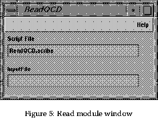

To use a map drag it onto the Map Editor, the same as starting a module, and wait for it to load. When all the blue pipes (some pipes may be purple) are in place the map is ready to be used. If some of the modules are flashing yellow wait until this has finished.
The following maps can be found in the Meson and Gauge lists in the Librarian.
Specific ports have been disconnected on each map so that Explorer does not begin loading in a file that does not exist, or begin a loop which may take a long time to execute. Before connecting these ports it is advisable to check the information entered in the widgets on all modules and alter as appropriate, for example check the file name in ReadQCD and Animfile, and the range of any For module.
For use of the animation and gaugeslice maps the following ports must be connected:
Connect Animfile input value to the For module output current value (to enable the for loop to sweep through files). To activate the For module connect Render sync output to the For condition input.
For all maps ReadQCD needs to be connected to Animfile. To do this connect the output port out file on Animfile to input file of the input port of ReadQCD. It is not necessary to use Animfile, the file name may be entered in directly in the input file section of ReadQCD, however if many files are to be used which only differ by a number, eg the timeslice, then Animfile reduces the entering of filenames. Animfile must be used if using a For module to sweep through many files.
Please note that ReadQCD may still have to be connected. Where not specified this involves connecting the output port of ReadQCD to the input-lattice ports of orthoslice and maxmin.
Once the map is set up click on the square box at the top of the ReadQCD module, or if Animfile is present this may be used instead. A window will appear (see figure 5.

Leave the scribe part of the window. Click the left mouse button in the input part of the window and type in the path for your file. If in doubt enter the full pathname. Press return. If the module does not start to flash yellow within a few seconds click the right mouse button on the top part of the module and select refire.
Images are viewed in the Render module window. To enlarge the window click on the square on the module with the left mouse button, this is the same for all modules. The image may take a while to appear, please be patient. They are various facilities within the Render window. The best way to learn about these is by playing about with them using a simple map and a small data set. Holding the right mouse button down over the image will produce a menu. The most useful facilities are in the option Functions are View all which will home in on your image, Set home and Home - these will set a position for your image which can be homed in on if you lose the image. There is also a decoration option which iconizes some of these facilities around the edges of the Render wondow. For more details of these please refer to the Explorer manual [4] (see section 6.9).